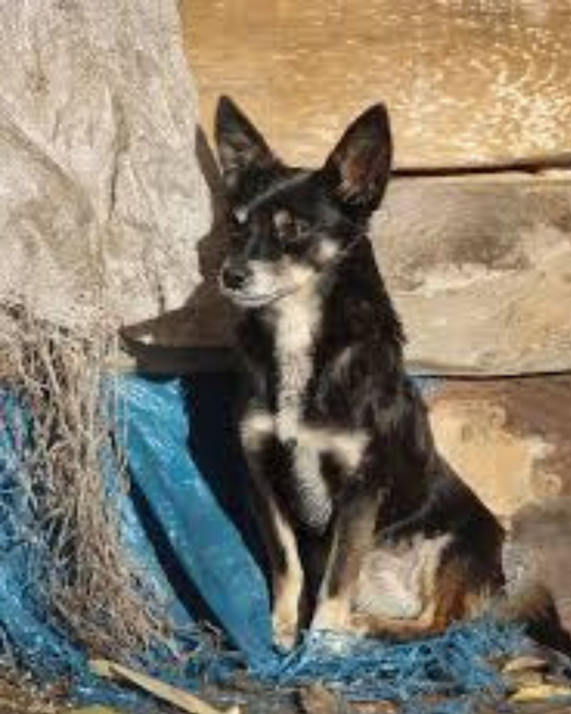
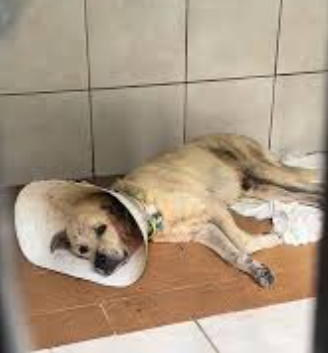
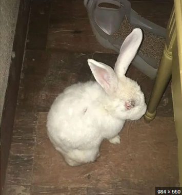
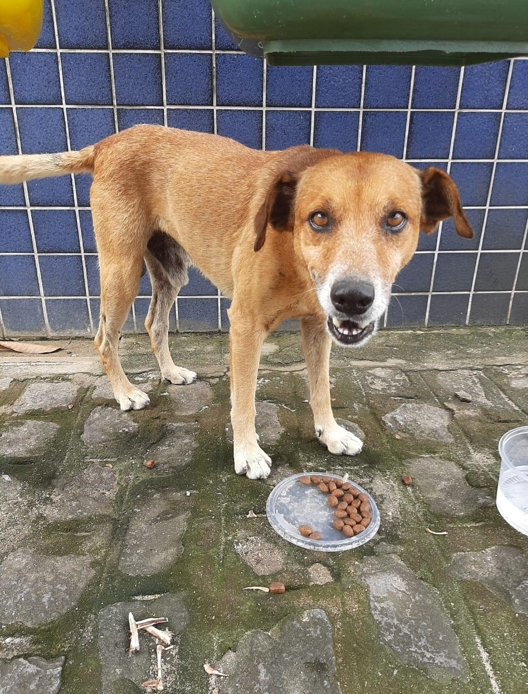
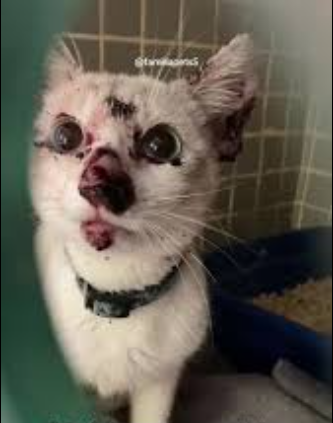
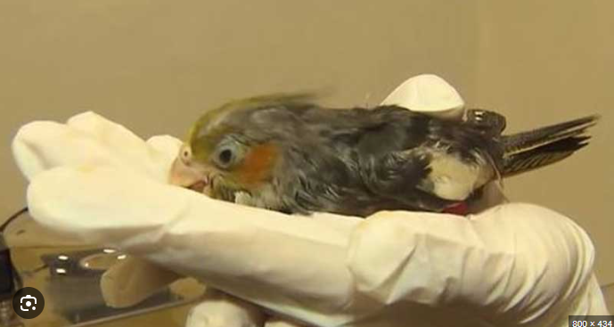
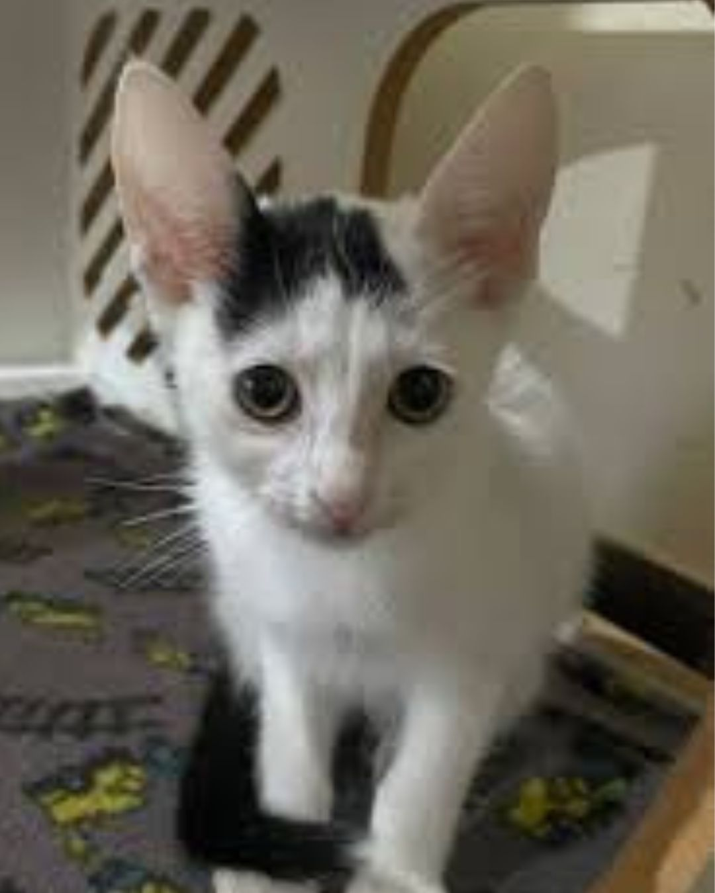
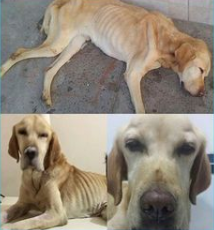
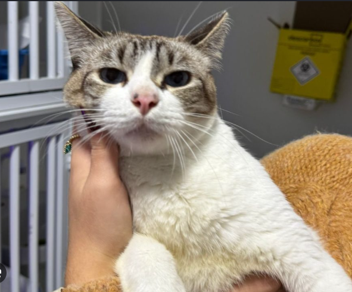

Thor foi resgatado e procura uma família cheia de amor. Para continuar saudável no abrigo, ele precisa muito de ajuda com:
• Produtos de cuidados para banho
• Alimentação de qualidade

Mel está muito debilitada, deitada, bem magrinha e usando um colar elizabetano (cone) no pescoço. Ela foi diagnosticada com a doença do carrapato (Erliquiose) e precisa de doações urgentes para:
• Custo integral do tratamento médico
• Medicamentos e exames de sangue

A coelhinha Sansa foi encontrada em uma situação delicada e atualmente está com um de seus olhinhos bem ferido. Sua doação será destinada para:
• Pomadas oftalmológicas específicas
• Cirurgia e curativos diários

Boby foi resgatado das ruas e está sob os nossos cuidados protetores. Para se manter forte enquanto espera um lar, ele depende de doações para:
• Compra de sacos de ração
• Suplementação alimentar

A gatinha Pipoca chegou com algumas feridinhas visíveis no seu rostinho. Ela já começou a receber os cuidados básicos e parece estar melhorando, mas ainda precisa de:
• Pomadas cicatrizantes e antialérgicas
• Ração especial de alta energia

O pequeno Pikachu foi resgatado em estado crítico, muito molhado e bastante debilitado. Ele está lutando pela vida e precisa de apoio urgente para:
• Internação em UTI aviária especializada
• Medicamentos injetáveis urgentes

Yang foi resgatada das ruas recentemente e necessita passar por todo o protocolo de triagem inicial. Colabore para garantir a ela:
• Aplicação de vacinas essenciais V4/V5
• Exames gerais de saúde e check-up

Frederica acabou de ser resgatada diretamente do abandono nas ruas. Ela se encontra muito magra e fraca, precisando urgentemente de doações para:
• Alimentação focada em ganho de peso
• Vitaminas e exames para anemia

O Princeso está totalmente saudável e bem alimentado. Ele só precisa de uma última etapa para finalmente encontrar o seu lar definitivo:
• Procedimento cirúrgico de castração
• Liberação oficial para a adoção